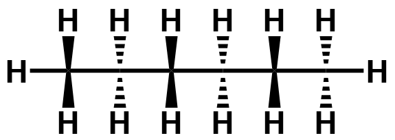
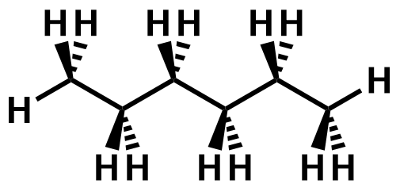

| Top view | Side view |
|---|---|
|  |  |
| Try to rotate the two molecules about the x-axis (by sliding your finger up-down). You find that when viewed from the top, the carbon chain may appear to be linear, although it is in fact in a zig-zag manner as seen from the side, due to the 109.5º tetrahedral angle about each sp³ hybridised carbon. | |